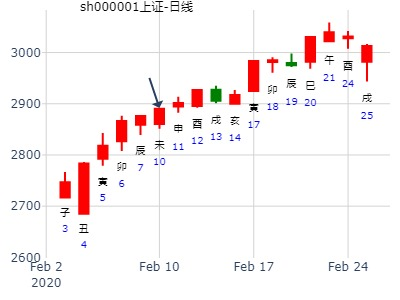
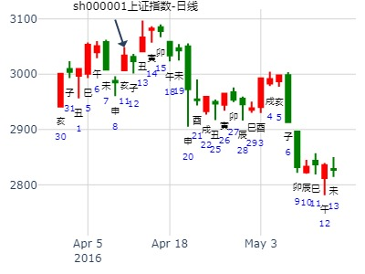

主帖标题: 2014年股票实战.总卦贴
事由：问买进002133广宇集团财运情况
公历起卦时间：2014年2月26日10时42分 (电脑自动)
干支：甲午年 丙寅月 戊辰日 丁巳时 （日空：戌亥）
艮宫：山火贲 (六合) 巽宫：山雷颐 (游魂)
六神 伏神 本 卦 变 卦
朱雀 官鬼丙寅木 ▅▅▅▅▅ 官鬼丙寅木 ▅▅▅▅▅
青龙 妻财丙子水 ▅▅ ▅▅ 妻财丙子水 ▅▅ ▅▅
玄武 兄弟丙戌土 ▅▅ ▅▅ 应 兄弟丙戌土 ▅▅ ▅▅ 世
白虎 子孙丙申金 妻财己亥水 ▅▅▅▅▅ ○→ 兄弟庚辰土 ▅▅ ▅▅
腾蛇 父母丙午火 兄弟己丑土 ▅▅ ▅▅ 官鬼庚寅木 ▅▅ ▅▅
勾陈 官鬼己卯木 ▅▅▅▅▅ 世 妻财庚子水 ▅▅▅▅▅ 应
占事：寅月财运
起卦hour:2015年2月5日8时24分
时间: 2015-02-05
干支: 乙未年戊寅月壬子日 (旬空: 寅卯 )
山火贲 山雷颐(游魂)
六神 伏神 本 卦 变 卦
白虎 ▅▅▅▅▅ 官鬼寅木 ▅▅▅▅▅ 官鬼寅木
腾蛇 ▅▅ ▅▅ 妻财子水 ▅▅ ▅▅ 妻财子水
勾陈 ▅▅ ▅▅ 兄弟戌土 应 ▅▅ ▅▅ 兄弟戌土 世
朱雀 子孙申金▅▅▅▅▅ 妻财亥水 Ｏ→ ▅▅ ▅▅ 兄弟辰土
青龙 父母午火▅▅ ▅▅ 兄弟丑土 ▅▅ ▅▅ 官鬼寅木
玄武 ▅▅▅▅▅ 官鬼卯木 世 ▅▅▅▅▅ 妻财子水 应
贲之颐，财化兄看似破财，实则大赚的卦。.pdf
占事：贲之颐，财化兄看似破财，实则大赚的卦。.md
时间: 2015-02-05
干支: 乙未年戊寅月壬子日 (旬空: 寅卯 )
山火贲 山雷颐(游魂)
六神 伏神 本 卦 变 卦
白虎 ▅▅▅▅▅ 官鬼寅木 ▅▅▅▅▅ 官鬼寅木
腾蛇 ▅▅ ▅▅ 妻财子水 ▅▅ ▅▅ 妻财子水
勾陈 ▅▅ ▅▅ 兄弟戌土 应 ▅▅ ▅▅ 兄弟戌土 世
朱雀 子孙申金▅▅▅▅▅ 妻财亥水 Ｏ→ ▅▅ ▅▅ 兄弟辰土
青龙 父母午火▅▅ ▅▅ 兄弟丑土 ▅▅ ▅▅ 官鬼寅木
玄武 ▅▅▅▅▅ 官鬼卯木 世 ▅▅▅▅▅ 妻财子水 应
九三：贲如濡如，永贞吉。
2月10-14日本周股票财运 色子卦
公历时间：2020年2月10日7时58分
干 支：庚子年 戊寅月 癸未日 丙辰时
旬 空：辰巳 申酉 申酉 子丑
神 煞：驿马─巳 桃花─子 日禄─子 贵人─巳，卯
艮宫：山火贲 巽宫：山雷颐（游魂）
六神 伏 神 【本 卦】 【变 卦】
白虎 ▄▄▄▄▄ 官鬼丙寅木 ▄▄▄▄▄ 官鬼丙寅木
螣蛇 ▄▄ ▄▄ 妻财丙子水 ▄▄ ▄▄ 妻财丙子水
勾陈 ▄▄ ▄▄ 兄弟丙戌土 应 ▄▄ ▄▄ 兄弟丙戌土 世
朱雀 子孙丙申金 ▄▄▄▄▄ 妻财己亥水 ○ ▄▄ ▄▄ 兄弟庚辰土
青龙 父母丙午火 ▄▄ ▄▄ 兄弟己丑土 ▄▄ ▄▄ 官鬼庚寅木
玄武 ▄▄▄▄▄ 官鬼己卯木 世 ▄▄▄▄▄ 妻财庚子水 应
反馈，，本周获利1283元。2.5点

主帖标题: 07大家一起来，九缠烂打：上证2021.2.23收盘 个位数是几？
公历起卦时间：2021年2月22日20时1分 (电脑自动)
干支：辛丑年 庚寅月 辛丑日 戊戌时 （日空：辰巳）
艮宫：山火贲 (六合) 巽宫：山雷颐 (游魂)
六神 伏神 本 卦 变 卦
螣蛇 官鬼丙寅木 ▅▅▅▅▅ 官鬼丙寅木 ▅▅▅▅▅
勾陈 妻财丙子水 ▅▅ ▅▅ 妻财丙子水 ▅▅ ▅▅
朱雀 兄弟丙戌土 ▅▅ ▅▅ 应 兄弟丙戌土 ▅▅ ▅▅ 世
青龙 子孙丙申金 妻财己亥水 ▅▅▅▅▅ ○→ 兄弟庚辰土 ▅▅ ▅▅
玄武 父母丙午火 兄弟己丑土 ▅▅ ▅▅ 官鬼庚寅木 ▅▅ ▅▅
白虎 官鬼己卯木 ▅▅▅▅▅ 世 妻财庚子水 ▅▅▅▅▅ 应
主帖标题: 2020.03第二周上证指数擂台赛第 3局（11日) Z方
公历起卦时间：2020年3月11日1时14分 (手工指定)
干支：庚子年 己卯月 癸丑日 癸丑时 （日空：寅卯）
艮宫：山火贲 (六合) 巽宫：山雷颐 (游魂)
六神 伏神 本 卦 变 卦
白虎 官鬼丙寅木 ▅▅▅▅▅ 官鬼丙寅木 ▅▅▅▅▅
螣蛇 妻财丙子水 ▅▅ ▅▅ 妻财丙子水 ▅▅ ▅▅
勾陈 兄弟丙戌土 ▅▅ ▅▅ 应 兄弟丙戌土 ▅▅ ▅▅ 世
朱雀 子孙丙申金 妻财己亥水 ▅▅▅▅▅ ○→ 兄弟庚辰土 ▅▅ ▅▅
青龙 父母丙午火 兄弟己丑土 ▅▅ ▅▅ 官鬼庚寅木 ▅▅ ▅▅
玄武 官鬼己卯木 ▅▅▅▅▅ 世 妻财庚子水 ▅▅▅▅▅ 应《周易》——山火

主帖标题: A色子01：上证3.24收盘走势？
上证3.24收盘走势？
公历起卦时间：2022年3月23日15时25分 (手工指定)
干支：壬寅年 癸卯月 乙亥日 甲申时 （日空：申酉）
艮宫：山火贲 (六合) 巽宫：山雷颐 (游魂)
六神 伏神 本 卦 变 卦
玄武 官鬼丙寅木 ▅▅▅▅▅ 官鬼丙寅木 ▅▅▅▅▅
白虎 妻财丙子水 ▅▅ ▅▅ 妻财丙子水 ▅▅ ▅▅
螣蛇 兄弟丙戌土 ▅▅ ▅▅ 应 兄弟丙戌土 ▅▅ ▅▅ 世
勾陈 子孙丙申金 妻财己亥水 ▅▅▅▅▅ ○→ 兄弟庚辰土 ▅▅ ▅▅ #
朱雀 父母丙午火 兄弟己丑土 ▅▅ ▅▅ 官鬼庚寅木 ▅▅ ▅▅
青龙 官鬼己卯木 ▅▅▅▅▅ 世 妻财庚子水 ▅▅▅▅▅ 应
主帖标题: 有色金属板块还有行情吗？
以下是引用麦华盛在2007-4-12 23:00:00的发言：
利空消息：我国调低有色金属出口退税 最低降至5% 我以收到利空消息的时间起卦占算对股票的影响：
起卦方式：时间起卦
公历时间：2007年4月12日22时56分 星期四
干支：丁亥年 甲辰月 丙子日 己亥时 (旬空：申酉)
神煞：驿马—寅 桃花—酉 日禄—巳 贵人—酉，亥
艮宫：山火贲 巽宫：山雷颐（游魂）
六神 伏 神 【本 卦】 【变 卦】
青龙 ▅▅▅▅▅ 官鬼丙寅木 ▅▅▅▅▅ 官鬼丙寅木
玄武 ▅▅ ▅▅ 妻财丙子水 ▅▅ ▅▅ 妻财丙子水
白虎 ▅▅ ▅▅ 兄弟丙戌土 应 ▅▅ ▅▅ 兄弟丙戌土 世
螣蛇 子孙丙申金 ▅▅▅▅▅ 妻财己亥水 ○→ ▅▅ ▅▅ 兄弟庚辰土
勾陈 父母丙午火 ▅▅ ▅▅ 兄弟己丑土 ▅▅ ▅▅ 官鬼庚寅木
朱雀 ▅▅▅▅▅ 官鬼己卯木 世 ▅▅▅▅▅ 妻财庚子水 应
本周大盘。时间卦。qaqahappy
丙申年壬辰月辛酉日己亥时 ;(子丑空) ;
丙申年三月初三(2016/04/09 ;21:41:42)
;山火贲 山雷颐
腾蛇 ;官鬼寅木 ;／ ; 官鬼寅木 ;／ ;
勾陈 ;妻财子水 ;∥ ; 妻财子水 ;∥ ;
朱雀 ;兄弟戌土 ;∥ ;应 兄弟戌土 ;∥ ;世
子孙申金：青龙 ;妻财亥水 ;○ ; 兄弟辰土 ;∥ ;
父母午火：玄武 ;兄弟丑土 ;∥ ; 官鬼寅木 ;∥ ;
白虎 ;官鬼卯木 ;／ ;世 妻财子水 ;／ ;应

求测事情：603126中材节能，下周大涨趋势吗
公历：2019-04-13 11:21
干支：己亥年戊辰月庚辰日壬午时 旬空：申酉空
山火贲(艮宫 ) 山雷颐(巽宫 )
▄▄▄▄▄丙寅木官鬼 滕蛇 ▄▄▄▄▄丙寅木官鬼
▄▄ ▄▄丙子水妻财 勾陈 ▄▄ ▄▄丙子水妻财
应▄▄ ▄▄丙戌土兄弟 朱雀 世▄▄ ▄▄丙戌土兄弟
▄▄▄▄▄己亥水妻财 青龙 ○─→ ▄▄ ▄▄庚辰土兄弟
▄▄ ▄▄己丑土兄弟 玄武 ▄▄ ▄▄庚寅木官鬼
世▄▄▄▄▄己卯木官鬼 白虎 应▄▄▄▄▄庚子水妻财
断：不会出现大涨趋势
主帖标题: 我设计的看图版面 感觉比较舒服
学徒钟点工 发表于 2019-4-13 10:52
分工：你利用软件选号股，我起卦判断后期的股票作为。
占事：癸巳年气运如何？
时间: 2013-06-08 20:05
干支: 癸巳年戊午月乙巳日丙戌时 (旬空: 寅卯 )
山火贲 山雷颐(游魂)
六神 伏神 本 卦 变 卦
玄武 ▅▅▅▅▅ 官鬼寅木 ▅▅▅▅▅ 官鬼寅木
白虎 ▅▅ ▅▅ 妻财子水 ▅▅ ▅▅ 妻财子水
腾蛇 ▅▅ ▅▅ 兄弟戌土 应 ▅▅ ▅▅ 兄弟戌土 世
勾陈 子孙申金▅▅▅▅▅ 妻财亥水 Ｏ→ ▅▅ ▅▅ 兄弟辰土
朱雀 父母午火▅▅ ▅▅ 兄弟丑土 ▅▅ ▅▅ 官鬼寅木
青龙 ▅▅▅▅▅ 官鬼卯木 世 ▅▅▅▅▅ 妻财子水 应
九三：贲如濡如，永贞吉。
世爻官鬼旬空。
财爻亥水月休日破，化墓化回头克，全年破财。
六月财爻月破，亥被日冲，大跌。
亥月股市大涨。
贲之颐，财化兄，值财日暴跌。（财空，则出空就受克；财不空，则一般是涨）
贲卦多见长上影或长下影，或螺旋奖线，总之见顶的诱多或诱惑线。
起铜钱课测沪市大盘(7月28日)之行情涨跌，得：
起卦方式：报数起卦 (15,3) 动爻加时辰
公历时间：2009年7月27日15时2分
干支：己丑年 辛未月 癸酉日 庚申时·
旬空：午未 戌亥 戌亥 子丑
神煞：驿马─亥 桃花─午 日禄─子 贵人─巳，卯
艮宫：山火贲 巽宫：山雷颐（游魂）
六神 伏 神 【本 卦】 【变 卦】
白虎 ▄▄▄▄▄ 官鬼丙寅木 ▄▄▄▄▄ 官鬼丙寅木
螣蛇 ▄▄ ▄▄ 妻财丙子水 ▄▄ ▄▄ 妻财丙子水
勾陈 ▄▄ ▄▄ 兄弟丙戌土 应 ▄▄ ▄▄ 兄弟丙戌土 世
朱雀 子孙丙申金 ▄▄▄▄▄ 妻财己亥水 O-> ▄▄ ▄▄ 兄弟庚辰土
青龙 父母丙午火 ▄▄ ▄▄ 兄弟己丑土 ▄▄ ▄▄ 官鬼庚寅木
玄武 ▄▄▄▄▄ 官鬼己卯木 世 ▄▄▄▄▄ 妻财庚子水 应
日卦，马后炮：
1。贲卦，此日为诱多，或危险。
2。戌日冲散辰土，反倒不跌。吊劲线。收小阳。
3。亥日出空则大跌，化回头克，暴跌，值财日照样暴跌。
亥化辰，化克，ＯＲ入墓？
或是论起卦当天，酉日合绊兄弟辰土？
相当于：1。大象发动，财化克，当天大跌。（财化兄，财空，则出空就受克）
2。然后辰酉相合，让兄弟歇歇火，于是又拉回。
多年以后的总结：2014年10月
关键是：财空，出空就受克。
（同日他卦为比之屯）
戌日土日即见顶。
占事：600010短线走势
起卦方式：手动摇卦 易经股市论坛
公历时间：2011年7月5日16时55分
干 支：辛卯年 甲午月 辛酉日 丙申时 旬 空：午未 辰巳 (子丑) 辰巳
艮宫：山火贲 巽宫：山雷颐（游魂）
六神 伏 神 【本 卦】 【变 卦】
螣蛇 ▄▄▄▄▄ 官鬼丙寅木 ▄▄▄▄▄ 官鬼丙寅木
勾陈 ▄▄ ▄▄ 妻财丙子水 ▄▄ ▄▄ 妻财丙子水
朱雀 ▄▄ ▄▄ 兄弟丙戌土 应 ▄▄ ▄▄ 兄弟丙戌土 世
青龙 子孙丙申金 ▄▄▄▄▄ 妻财己亥水 O-> ▄▄ ▄▄ 兄弟庚辰土
玄武 父母丙午火 ▄▄ ▄▄ 兄弟己丑土 ▄▄ ▄▄ 官鬼庚寅木
白虎 ▄▄▄▄▄ 官鬼己卯木 世 ▄▄▄▄▄ 妻财庚子水 应
此卦戌虽冲辰，但在午月却是冲旺，而非冲走。
stock_east 对包钢连摇三个卦。
占事：600010
起卦方式：手动摇卦 易经股市论坛 www.yijingstock.com 在线排盘系统
公历时间：2011年7月6日12时18分
干 支：辛卯年 甲午月 壬戌日 丙午时
旬 空：午未 辰巳 (子丑) 寅卯
兑宫：地山谦 坎宫：地火明夷（游魂）
六神 伏 神 【本 卦】 【变 卦】
白虎 ▄▄ ▄▄ 兄弟癸酉金 ▄▄ ▄▄ 兄弟癸酉金
螣蛇 ▄▄ ▄▄ 子孙癸亥水 世 ▄▄ ▄▄ 子孙癸亥水
勾陈 ▄▄ ▄▄ 父母癸丑土 ▄▄ ▄▄ 父母癸丑土 世
朱雀 ▄▄▄▄▄ 兄弟丙申金 ▄▄▄▄▄ 子孙己亥水
青龙 妻财丁卯木 ▄▄ ▄▄ 官鬼丙午火 应 ▄▄ ▄▄ 父母己丑土
玄武 ▄▄ ▄▄ 父母丙辰土 X-> ▄▄▄▄▄ 妻财己卯木 应
此卦辰土月旺日冲暗动，旺则不散。先跌后反弹，只是到了卯日小反弹一天。
辰日继续跌。
巳日冲动态旬空的子孙世爻，冲实。而涨了一天。

占事：9月后二周走势？
排卦：元亨利贞网六爻在线排盘系统 http://www.china95.net
公历起卦时间：2014年9月17日12时24分 (报双数起卦-动爻加时辰)
干支：甲午年 癸酉月 辛卯日 甲午时 （日空：午未）
艮宫：山火贲 (六合) 巽宫：山雷颐 (游魂)
六神 伏神 本 卦 变 卦
腾蛇 官鬼丙寅木 ▅▅▅▅▅ 官鬼丙寅木 ▅▅▅▅▅
勾陈 妻财丙子水 ▅▅ ▅▅ 妻财丙子水 ▅▅ ▅▅
朱雀 兄弟丙戌土 ▅▅ ▅▅ 应 兄弟丙戌土 ▅▅ ▅▅ 世
青龙 子孙丙申金 妻财己亥水 ▅▅▅▅▅ ○→ 兄弟庚辰土 ▅▅ ▅▅
玄武 父母丙午火 兄弟己丑土 ▅▅ ▅▅ 官鬼庚寅木 ▅▅ ▅▅
白虎 官鬼己卯木 ▅▅▅▅▅ 世 妻财庚子水 ▅▅▅▅▅ 应
22日开始辰巳空，空兄不制财。于是一路涨。
19日巳日冲亥水暗动（兼冲散），此处以涨为主。（或云： 财化兄化墓，巳日冲出墓而涨）
24日戌日也是冲墓而涨（此处动态是空墓，为冲塌）
(虽然也是变爻逢冲，一般变爻逢冲为冲去，或旬空时为冲实，但此处以墓为主象）
然后本旬一直是空墓，墓不住财爻。子日大涨为助财.

主帖标题: 周五创业板2.525
主题：创业板
壬寅年己酉月戊寅日癸亥时(申酉空)
壬寅年七月三十(2022/09/22 21:41)
山火贲 山雷颐
朱雀 官鬼寅木 ／ 官鬼寅木 ／
青龙 妻财子水 ∥ 妻财子水 ∥
玄武 兄弟戌土 ∥ 应 兄弟戌土 ∥ 世
子孙申金：白虎 妻财亥水 ○ 兄弟辰土 ∥
父母午火：腾蛇 兄弟丑土 ∥ 官鬼寅木 ∥
勾陈 官鬼卯木 ／ 世 妻财子水 ／ 应
时间: 2021-10-18 11：53
干支: 辛丑年戊戌月己亥日庚午时 (旬空: 辰巳 )
山火贲 山雷颐(游魂)
六神 伏神 本 卦 变 卦
勾陈 ▅▅▅▅▅ 官鬼寅木 ▅▅▅▅▅ 官鬼寅木
朱雀 ▅▅ ▅▅ 妻财子水 ▅▅ ▅▅ 妻财子水
青龙 ▅▅ ▅▅ 兄弟戌土 应 ▅▅ ▅▅ 兄弟戌土 世
玄武 子孙申金▅▅▅▅▅ 妻财亥水 Ｏ→ ▅▅ ▅▅ 兄弟辰土
白虎 父母午火▅▅ ▅▅ 兄弟丑土 ▅▅ ▅▅ 官鬼寅木
腾蛇 ▅▅▅▅▅ 官鬼卯木 世 ▅▅▅▅▅ 妻财子水 应
九三：贲如濡如，永贞吉。
2021-10-18
主帖标题: 最近大家起卦预测的帖子少了，希望大家积极发帖预测大盘！
占事：上证指数明日走势
公历起卦时间：2022年11月1日19时25分 (电脑自动)
干支：壬寅年 庚戌月 戊午日 壬戌时 （日空：子丑）
艮宫：山火贲 (六合) 巽宫：山雷颐 (游魂)
六神 伏神 本 卦 变 卦
朱雀 官鬼丙寅木 ▅▅▅▅▅ 官鬼丙寅木 ▅▅▅▅▅
青龙 妻财丙子水 ▅▅ ▅▅ 妻财丙子水 ▅▅ ▅▅
玄武 兄弟丙戌土 ▅▅ ▅▅ 应 兄弟丙戌土 ▅▅ ▅▅ 世
白虎 子孙丙申金 妻财己亥水 ▅▅▅▅▅ ○→ 兄弟庚辰土 ▅▅ ▅▅
螣蛇 父母丙午火 兄弟己丑土 ▅▅ ▅▅ 官鬼庚寅木 ▅▅ ▅▅
勾陈 官鬼己卯木 ▅▅▅▅▅ 世 妻财庚子水 ▅▅▅▅▅ 应
午日冲旬空子水冲实。